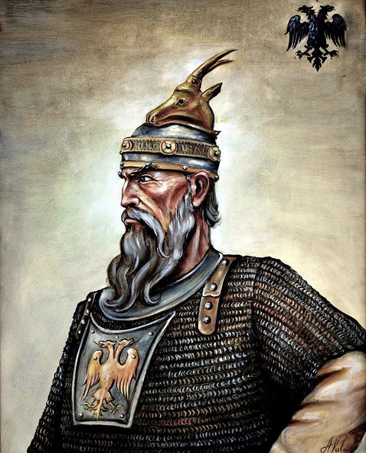

 Skënderbeu ishte një figurë e rëndësishme në historinë e Ballkanit, i cili udhëhoqi rezistencën shqiptare kundër pushtuesve osmanë në shekullin e 15-të. Emri i tij i plotë ishte Gjergj Kastrioti Skënderbeu, dhe ai lindi në Krujë, një qytet në atë që sot është Shqipëria. Skënderbeu u rrit nën mbrojtjen e Sulltanit të Rumelisë, dhe shërbeu në ushtrinë osmane. Megjithatë, ai u ngrit në krye të një revoltëje anti-osmane dhe u shpall princ i Krujës në vitin 1443. Ai udhëhoqi një lëvizje të gjërë për pavarësi kundër Perandorisë Osmane për më shumë se dy dekada. Përkundër sfidave të mëdha, Skënderbeu dhe ushtria e tij arritën të mbajnë nën kontroll një pjesë të madhe të territorit shqiptar. Ai u bë një simbol i rezistencës ballkanike ndaj pushtuesve osmanë dhe një shembull i vlerave të lirisë dhe pavarësisë për shqiptarët dhe për shumë kombësi të tjera në rajon. Skënderbeu vdiq në 1468, por trashëgimia e tij ka mbetur e rëndësishme për historinë dhe identitetin shqiptar.